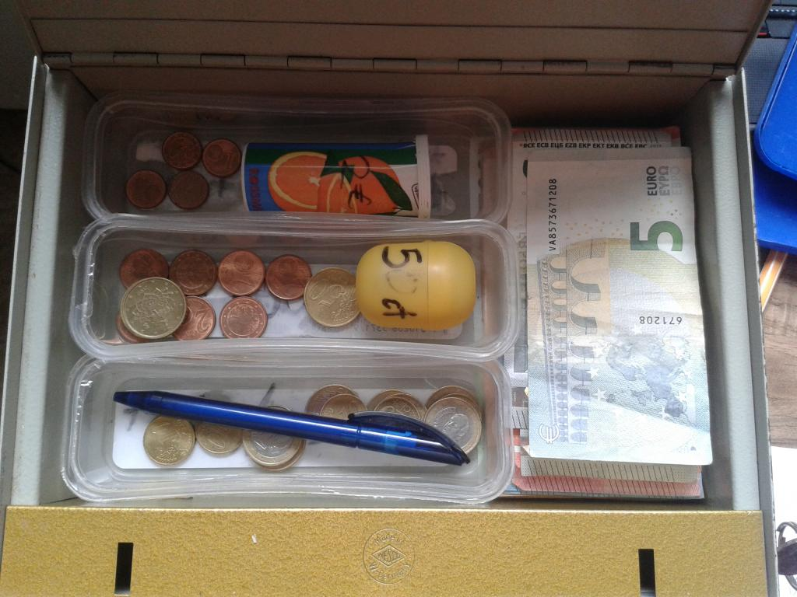
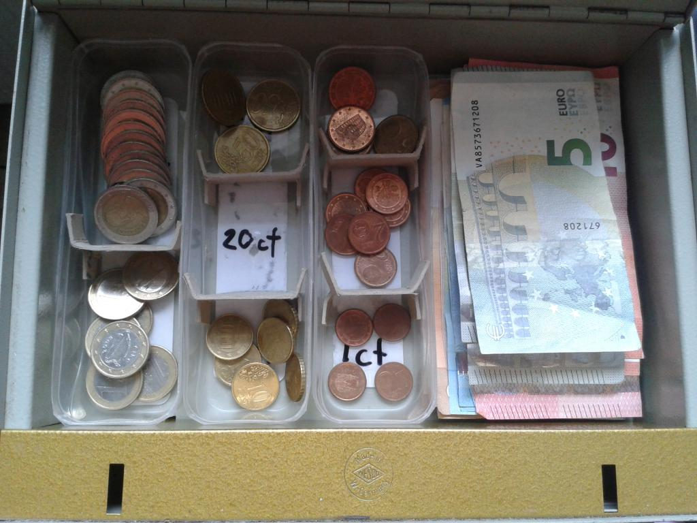
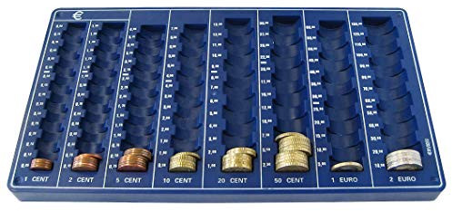
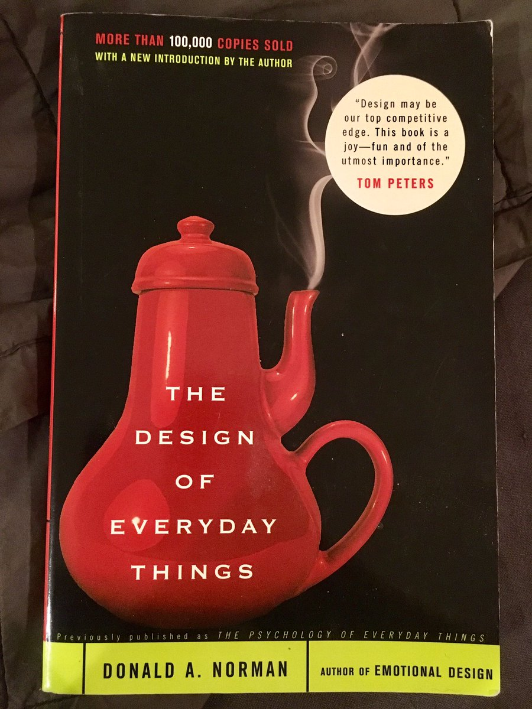

Today I was transferring coins from the Kanthaus donation jar to the cash box for the first time. This turned out to be surprisingly difficult and I took the opportunity to redesign it better. The box looked like this:

Here the coins are separated into three horizontal trays and two containers. Each tray contains a mixture of coins as indicated by labels written on their bases, from top to bottom: 20c & 1c, 50c & 2c and €1 & 10c. The tube container is marked for €2 and the egg-shaped one for 5c. This design is difficult to use since:
The negative consequences of this design perhaps become clearer when considering the options I was faced with:
I chose the last option. I added cardboard spacers to the trays to make one section for each type of coin and ordered the sections from most valuable coin to least:

These relatively small changes greatly simplify the process of sorting coins: a user now simply needs to visually match the coin (one identification) and drop them into place (one action). The observant reader will realise this 'new' design closely resembles a standard money tray. Copying or mimicking popular designs is not just flattering, it reduces the amount of education or guess-work users need to understand the intended usage.

The responsibility for designers to understand potential user needs was impressed upon me by reading Don Norman's book, 'The Design of Everyday Things.' Don explains how fantastically error-prone and cognitively-limited humans are, and that the effort of learning is increased with every new procedure a person has to learn. Designers, being completely familiar with their own designs, can be blinded to the difficulties users will face unless they're careful.

Having empathy for users seems to be critical to good design. Indeed the 'goodness' of a design appears to be dependent on users experience, not the designer's opinion. Through good design we help people use their time and effort more effectively with fewer mistakes; designers should share their users joy. Happy designing and user-testing!
Syndicated to the Kanthaus blog